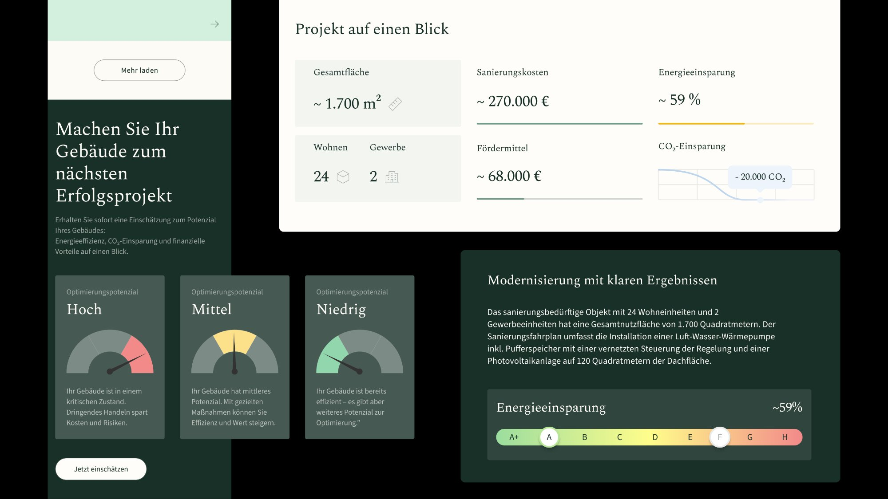
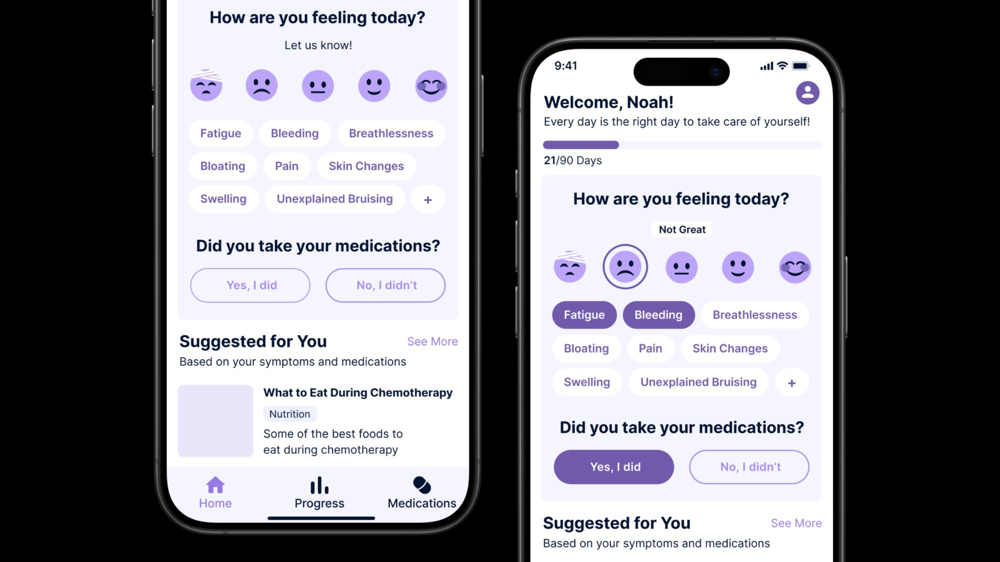
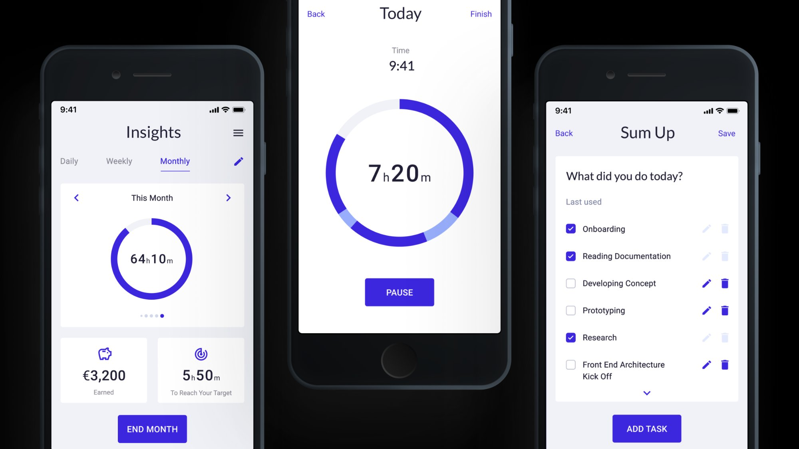
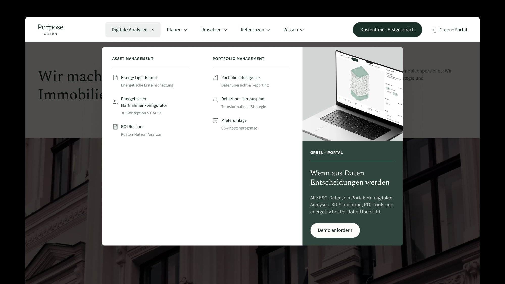
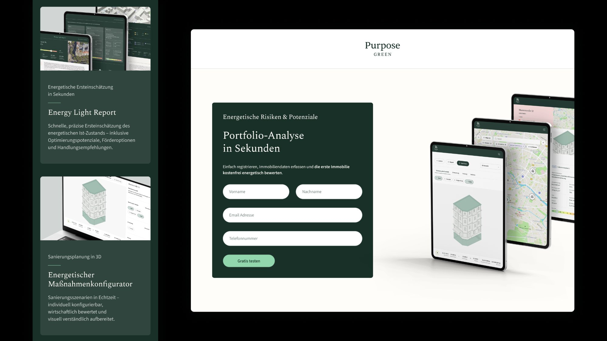

I design interfaces that balance clarity, usability, and strong visual identity — integrating AI to move faster and working closely with developers to ensure the final result matches the design.
View Work
Selected UX/UI projects — navigation redesign, data-driven page structures, campaign landing pages, and A/B tested experiences

Mobile app for oncology patients — daily check-ins, symptom tracking, and care team communication

Time tracking app designed from scratch — built for freelancers and contractors who need to log hours fast and report clearly
Designed and optimized Websites and Landing Pages, applying UI/UX Principles and improving layouts, components, and user flows based on User Behavior Analysis and Performance Data.
Led Website and Product Experience Improvements, designing scalable components, improving page structure and usability to ensure clarity, consistency, and high-quality digital interactions.
Designing and Redesigning App Interfaces, including creating Prototypes for a new app in preparation for its launch.
Led the Design Team, overseeing all design materials (UX/UI, Print, Digital, Social Media) and making final decisions on their execution.
Created Design Systems and Apps from scratch, delivering effective and consistent UX/UI Solutions across digital products in line with Expertlead's branding.
Used Figma and Adobe Creative Suite to design Interfaces, Prototypes, and a wide range of Marketing Assets.
Designing Printed Material such as Brochures, Leaflets, Roll-Up Banners, Table Signages, ID Badges and Lanyards.
Designing Digital Material such as Digital Interactive Brochures, Social Media Banners and Video Editing.
Berlin-based UX/UI and web designer. I studied at the Academy of Fine Arts and have spent 4+ years designing digital products in Berlin startups and scale-ups. I work across product design, web, and visual — with a strong eye for UI and a mindset for systems.
I ask why before I ask what. I work closely with both product and marketing teams, challenge assumptions, and follow every project from first wireframe to live implementation. I collaborate directly with developers to make sure the design holds up in the real world.
I use different AI tools depending on the task — Claude for layout reasoning and structure, ChatGPT for fast ideation, Lovable for quick prototyping, Gemini for research. The goal is always the same: reach better design decisions faster.
Open to full-time roles, freelance projects, and interesting collaborations.
UX/UI and web design projects — navigation systems, page redesigns, campaign landing pages, and A/B tested experiences for a B2B sustainability platform.
Oversees a portfolio of 30+ commercial and residential properties across Germany. Answers to investors on ESG performance and long-term asset value.
Understand portfolio-wide risk at a glance. Find service providers he can trust. Make renovation investment decisions backed by data, not guesswork.
Scans before he reads. Arrives via LinkedIn or referral. Loses trust at visual noise or unclear hierarchy. Responds to concrete numbers and social proof.
Claude for layout reasoning and content structure, ChatGPT for fast copy alternatives, Lovable for structural prototyping, Gemini for research. Each tool where it makes sense — always in service of a better design decision.

Replaced a basic flat navbar with a structured mega menu — icons, product banners, and clearer user paths.
Transformed a monotonous project list into a filterable, outcome-led case study system with visual data cards and CMS automation.

Full landing page built from scratch for a LinkedIn B2B campaign — structured for a pre-qualified audience.
Beyond UX and web, I also created social media assets, campaign visuals, and marketing materials for Purpose Green — expo banners, LinkedIn templates, "Meet me at" cards, and social posts.

Replacing a flat, basic navigation with a structured mega menu — better hierarchy, icons, product banners, and clearer paths for every visitor type.
Flat horizontal list — no hierarchy, no icons, no product context.


The old navigation was a flat horizontal list — no hierarchy, no visual anchors, no way to understand the product depth from the menu alone. As the platform grew with new services, the nav couldn't scale without becoming harder to read.
I redesigned it from the information architecture up, working with both product and marketing teams to map the right structure. I then built the mega menu in Figma and worked directly with the developer on implementation.
All items had equal visual weight. Users couldn't quickly distinguish primary services from secondary tools.
No icons, no banners, no product context. The nav communicated nothing about what the platform does.
Adding more items made it longer, not clearer. No room for product-level storytelling.
The mega menu isn't just a visual layout — it's a system. Every element was designed as an independent, reusable Figma component with clearly documented states: default, hover, and active.
Every column, row, and item uses Figma auto-layout — so spacing, alignment, and resizing are structural, not manual.
Default, hover, and active states defined within a single component using variants — one source of truth.
Component naming, layer structure, and documentation were built with the developer in mind from the start.
Component variants — default / hover / active · Figma auto-layout
Redesigning a flat, text-heavy reference list into a filterable, outcome-led card system — with a CMS architecture that auto-generates every visual element from data.
The References page is where potential clients validate Purpose Green's track record. The old version was a static blog format — long-form text, no visual hierarchy, and critical data like CO₂ savings and renovation costs buried in paragraphs. Nobody was actually reading it.
Hotjar scroll data showed 70–75% of users reached the first content block, but engagement dropped steeply below.
My role covered the full redesign: information architecture, the card system, the energy bar component, and the CMS automation architecture. I worked directly with the Webflow developer to define how every visual element maps to a CMS field.
A full landing page built from scratch for a LinkedIn B2B campaign — designed for a pre-qualified audience and built around one conversion goal.

↕ Scroll to explore the full page
The marketing team provided a first Figma draft with all the required content. It was functional but visually dense — not ready for a paid LinkedIn audience that makes a trust decision in seconds.
After design, I worked directly with the developer to ensure accurate implementation and launched on time. Live within 48 hours of the campaign deadline.
Designing a mobile app home screen for oncology patients — clear, calm, and built to be used daily during active treatment.
 Default state
Default state
 Selected state
Selected state
Kranus Health was building a companion app for oncology patients in active treatment. I designed the home screen from scratch — working with the product team and clinical advisors to create something that patients would actually use every day, without adding to their cognitive load.
The home screen is the most important view: clear, calm, one obvious next step. Check-in, symptom chips, and medication confirmation — all from a single view.
Constraint: accessible design for users aged 45–75, including those with chemo-related cognitive effects.
5 visual emoji-style options from very unwell to great — no text label needed. Accessible at a glance even when fatigued.
Plain language labels (Fatigue, Bloating, Pain) — not clinical terms. Pre-populated with the most common treatment symptoms.
Check-in, medication confirmation, and suggested content visible on one screen — no deep navigation required.
Designing a time tracking app for freelancers and contractors from scratch — built to make logging hours as frictionless as possible, while giving users the insights they actually need.
 Dashboard
Dashboard
 Insights
Insights
Expertlead needed a time tracking tool built specifically for their freelancer network — not a generic app, but something that understood how contractors actually work: multiple clients, hourly billing, monthly reporting. I designed it end-to-end, from research and personas to high-fidelity screens.
The core design challenge: time tracking is perceived as admin. The goal was to remove every possible source of friction.
I ran the full design process — user research, competitive analysis, information architecture, wireframes, and high-fidelity UI. I also built the component library for the app within the Expertlead design system.
Existing tools required too many taps, too many fields. Freelancers were logging retroactively — inaccurate and frustrating.
Raw time logs without structure. No per-client breakdown, no weekly patterns.
Freelancers were copy-pasting data into spreadsheets. The app didn't connect logging to reporting.
Every screen was designed to cover a specific step in the user journey — from first login to end-of-month reporting.
 01 — Login
02 — Dashboard
01 — Login
02 — Dashboard
 04 — Sum Up
05 — Insights
04 — Sum Up
05 — Insights